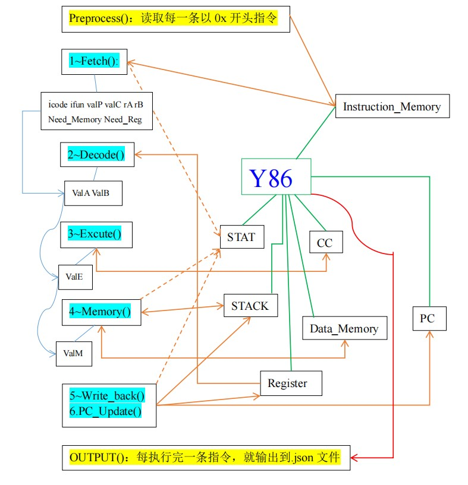

Some Instructions!
green line: component of Y86
orange/red line: interchange of Y86 and outside
blue line: passing of middle values
dotted line: may not change
still some relations not be revealed.
yellow ground: read in .yo && output .json
blue ground: six stages of CPU
